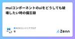
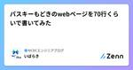
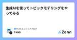

NCDCエンジニアブログのフィード
https://zenn.dev/p/ncdc
NCDC株式会社( https://ncdc.co.jp/ )のエンジニアチームです。 募集中のポジションや、採用している技術スタックの紹介などはこちらをご覧ください！ https://github.com/ncdcdev/recruitment
フィード

muiコンポーネントのuiをどうしても破壊したい時の備忘録 1
1
NCDCエンジニアブログのフィード
はじめにこのDatePickerコンポーネントは日付をカレンダーで入力できるmuiコンポーネントです。文字部分をクリックすると手入力、カレンダーアイコンをクリックするとカレンダー入力ができます。ですが、今回実装にあたって以下の変更を加える必要がありました。カレンダーアイコンはいらないどこをクリックしてもカレンダーモーダルが表示されるようにしたいですが、そのような変更オプションはDatePickerのAPIに含まれておらず、割と変わったアプローチをしたので記事にしました。【コード】<DesktopDatePicker /> 変更箇所を見てみる検証...
1日前

パスキーもどきのwebページを70行くらいで書いてみた 1
NCDCエンジニアブログのフィード
!このページに貼るコードは、認証っぽい動きをするだけでセキュリティは皆無です。個人の動作確認でのみ使用してください。!この記事ではFIDO2やWebAuthnも全部まとめてパスキーとして扱います。区別すると面倒くさいので。 やりたかったこと先日パスキーの実装を試してみた。結構複雑で難易度が高いなぁと思いました。https://zenn.dev/ncdc/articles/2d7b13c79e31f7シンプルに考える為に、見た目だけそれっぽいwebページを最小限の実装で作ってみようと思いました。 コードindex.html<!DOCTYPE html...
3日前
Amazon Comprehendでポジ/ネガフレーズTOP5を作成する
NCDCエンジニアブログのフィード
はじめにAmazon Comprehendのキーフレーズ抽出と感情分析を使ってみたときがあり、組み合わせて何かできないかと考え、より出現頻度が高く、よりポジティブ/ネガティブな文脈で使われているキーフレーズのランキングを作れないかと思ってやってみました。 仮のストーリー飲食店を経営していてカスタマーレビューからよく出現する、かつ、よりポジティブ（またはネガティブ）な文脈で使われているキーフレーズのランキングを作成して経営に活かしたいとします。架空のオムライス屋さんの良い点、悪い点を数名に書いてもらったと仮定して、それらを1つの文章にした以下のテキストファイルをGoogle ...
9日前

生成AIを使ってトピックモデリングをやってみる 3
NCDCエンジニアブログのフィード
はじめにトピックモデルとしてLDA(Latent Dirchlet Allocation)モデルを使って文章からトピックを特定しようと試みたことがありました。しかし、LDAモデルの出力である各トピックを構成する単語群が、前処理やモデルのパラメータによってはトピックを推測しづらいものになることがあることやトピックのラベルまでは付けてくれないことから、他の手法を試してみたくなりました。調べてみると、生成AIを使ってトピックモデリングをやっている論文があり、それを参考に、文章から各トピックを構成する単語群を抽出することと単語群にトピックラベルを付けることをやってみました。プロンプト...
9日前

[logging] pythonログレベルをlambdaに設定する
NCDCエンジニアブログのフィード
python の logging を使用して lambda のログレベルを制御する方法を備忘録として残します。!今回の記事は python 初学者向けの内容です。!以下のように進めます。pythonのログについてlambdaのログレベルについてログレベルを制御（実践）では、初めて行きます。 pythonのログについてpythonではプログラムのデバッグや実行状況の把握を行う際、以下の2つがよく使用されます。printlogging学習したての頃は恐らく、print を使用して、ログを出していたことが多いのではないでしょうか。一見すると、print...
14日前
パスキーの仕組みを、AWS上に構築したアプリから学ぶ
NCDCエンジニアブログのフィード
はじめに先日、AWSが提供されているサンプルを使ってAmplify Gen2上にパスキー認証を実装してみました。https://zenn.dev/ncdc/articles/5aa4e337c626a6今回は、実装されたAWSリソースを見ながら、パスキーによる認証処理を学んでいきたいと思います。!パスキーの説明をする上で本来はFIDO2やWebAuthnの話が必要になってきますが、この記事ではそれらも含めて全てパスキーとして説明します。 そもそも、パスキーとパスワードは何が違うか？パスキーとはパスワードに変わる認証方法と言われています。しかし、そもそもパスワードと...
15日前
対話型AIはどれがいい？
NCDCエンジニアブログのフィード
はじめに以前の職場ではAIを使っていると、「AIは間違った回答が来るし、何より身にならない。公式ドキュメントだけ見るように。」と怒られていたのですが今ではわりと使っています。その中で、chatGPTよりgeminiの方がいい！やclaudeが~などを聞くので結局どれがいいのかと思い調べてみました。!AIは必ずしも正しい結果を返すわけでないので、気をつけて使いましょう 今回比較するAIChatGPThttps://chatgpt.com/Geminihttps://gemini.google.com/Claudehttps://claude.ai/...
16日前
[ Future ] 並行処理の際のログについて考えてみた
NCDCエンジニアブログのフィード
python の futures を使用して並行処理を実施した際のログの扱い方についての備忘録として記事に残します。!この記事では以下について触れます。今回やること要件考えたこと困ったこと解決策まとめでは、初めて行きます。 今回やること以下をローカル（ターミナルでコマンドを叩いて）で実行するローカル（自身のPC）に存在するcsvファイルをparquet形式で S3 に保存する 要件1000個のデータに区切ってファイルを配置する → つまり1ファイル1000個のデータとなる同期処理では時間がかかるため、非同期処理で処理を行う 考えた...
21日前
AWS LambdaからAzureのOCRをIAM認証で実行しようとしたけど諦めた話
NCDCエンジニアブログのフィード
はじめに先日、Google Cloud→AWSのアクセスをIAM認証で通す記事を書きました。https://zenn.dev/ncdc/articles/a59403b5799d06今度はAWS→AzureをIAM認証で通そうとしました。が、諦めました。今回はAzureのOCRを使いたかったのですが、AWSからとか以前の問題で、私にはAzureのOCRをIAM認証で呼び出すことができませんでした。 やりたかったことS3に置かれたファイルをOCRする処理をLambdaで書きたかったのですが、AWSのOCRサービスであるAmazon Textractは日本語に対応していま...
23日前
[CDK API Gateway] タイムアウトの上限を伸ばせるようになった
NCDCエンジニアブログのフィード
CDKで REST API の構築をしている際にバージョンの都合でタイムアウトを伸ばせなかったため、備忘録として残しておきます。!この記事では以下について触れます。困ったこと解決策まとめでは、初めて行きます。 困ったことCDK(2.143.0)を使用して、元は HTTP API で構築を行なっていた箇所を、レスポンスのタイムアウトを伸ばす必要があったため、以下のように REST API に切り替えました。※ サービスクォータすの上限緩和申請にて29秒のデフォルト値から、120秒にタイムアウト時間を伸ばしました。（Maximum integration timeo...
1ヶ月前
Web Assemblyが流行るかも
NCDCエンジニアブログのフィード
先日、LT大会でWebAssemblyについてお話ししたのでその内容含めて記事を書きました。 調べようと思った背景弊社ではWebデザインのすり合わせにFigmaを使用しているのですが、そんなFigmaはWebAssemblyを使っているから高パフォーマンスを実現しているらしく、気になったので調べてみました。公式ブログを見ると、本当にWebAssemblyのおかげでロード時間が大幅短縮されていることがわかります。https://www.figma.com/ja-jp/blog/webassembly-cut-figmas-load-time-by-3x/ WebAssem...
1ヶ月前
AWS Amplify Gen2でパスキー認証を実装してみる
NCDCエンジニアブログのフィード
はじめにAWS公式サンプルのAmazon Cognito Passwordless Authを使ってApmlify Gen2上にパスキー認証を実装してみました。https://github.com/aws-samples/amazon-cognito-passwordless-auth/なお、フロントエンドはRemixのSPAモードにしてみました。(深い意味はなく使ったことないのでお試ししてみた感じです。) Amplify Gen2で作ってみた経緯パスキーは以前から試してみたいなと思っていて調べていたら上記のサンプルを見つけたのですが、載っている構成図がこんな感じなわけ...
2ヶ月前
Dev ModeのPlaygroundを活用したReact Component設計
NCDCエンジニアブログのフィード
最近、FigmaのDev ModeのPlaygroundを使用する機会があり、こちらが便利だと感じたので紹介させていただきます。 サマリー開発とFigmaデザインの不一致で、保守性が下がることがある。Dev ModeのPlaygroundを使うことで改善できそう。Playgroundとは、FigmaデザインのComponent Propeatyを簡単に試すことができるツールこちらを使用して設計することで、開発の保守性・効率が上がることが期待できる よくある設計方法とその課題以下のようなButtonを設計する際、どのような設計方法があるでしょうか。色が背景または、枠...
2ヶ月前
Amplify Gen2ならCDKで自由にカスタムできる。と思っていました。
NCDCエンジニアブログのフィード
結論から言うと、現時点でのAmplify Gen2はコンテナ(というかdockerコマンド)との相性が非常に悪いと思われます。dockerが使えないことで、PythonのLambdaをデプロイするのにも苦戦しました。 Amplify Gen2とはhttps://aws.amazon.com/jp/blogs/news/introducing-amplify-gen2/Amplify Gen2は、フルスタックのTypeScript開発体験を提供するAWS Amplifyの最新バージョンです。従来のAmplifyよりも、開発体験が進化しており、特にバックエンド開発において以下のよ...
2ヶ月前
AWS SNSとFirebase Cloud Messagingを使ってモバイルデバイスにプッシュ通知を送信する
NCDCエンジニアブログのフィード
AWS SNS を使って端末にプッシュ通知を送信してみる。 AWS SNS の簡単な説明https://docs.aws.amazon.com/sns/latest/dg/welcome.htmlドキュメントよりざっくり引用・要約。Amazon Simple Notification Service (Amazon SNS) は、配信者から購読者 へのメッセージ配信を提供するマネージドサービスです。配信者は、トピックにメッセージを送信することで、購読者と非同期的に通信します。クライアントは、Amazon Data Firehose、Amazon SQS、AWS Lamb...
2ヶ月前
【Flutter】fastlaneでGooglePlayの内部テストを配信する
NCDCエンジニアブログのフィード
タイトル通り、fastlane で GooglePlay の内部テストを配信できるようにしていきます。 はじめにfastlane の導入方法等については、この記事では記載しません。fastlane の導入方法等は、こちらの記事も参照してください。https://docs.flutter.dev/deployment/cd#fastlanehttps://zenn.dev/ncdc/articles/fastlane_match#fastlane-match-の導入 全体像使用するフォルダ構成project(root)└─ android └─ fastl...
2ヶ月前
100秒で分かるNextjsの公式チュートリアル
NCDCエンジニアブログのフィード
Nextjsの公式チュートリアルを実践したので、簡単に内容をまとめました。全十六章あります。 第一章 Getting Startedプロジェクトを作成して、appやscriptなどのフォルダ構造の説明があります。サーバーを起動してブラウザで確認して終了です。 第二章 CSS StylingtailwindとCSSモジュールの適用方法について。なお、この章以降はtaiwindを使用していきます。clsxというclassnameを動的に変更するライブラリの紹介もありました。今までは{}でjavascriptのif文でやっていたため、参考にしようと思います。<sp...
2ヶ月前
M2 MacでGiNZAのja-ginza-bert-largeを使ってみた
NCDCエンジニアブログのフィード
はじめに自身のspaCy + GiNZAで構文解析してみるで、ja-ginzaモデルを使用していましたが、解析精度がより高いモデルであるja-ginza-bert-large(β版)を使用してみたいと思い、イントールを試みたところ、インストールに失敗したことがあったため、メモしておきます。 環境構築開発環境は以下になります。MacBook Proチップ：Apple M2メモリ：16GBPythonのバージョンとライブラリ管理には、Ryeを使用しました。Pythonライブラリ管理ツール決定版！Ryeを導入してみたの記事を参考に導入しました。spaCyについては、G...
2ヶ月前
RDSのサブネットグループが変更できない
NCDCエンジニアブログのフィード
起きた問題RDSのサブネットグループを更新しようと思ったら、エラーが出ました。申し訳ありません。DB インスタンス {DB識別子} の変更のリクエストが失敗しました。You cannot move DB instance {DB識別子} to subnet group {移行先のサブネットグループ}. The specified DB subnet group and DB instance are in the same VPC. Choose a DB subnet group in different VPC than the specified DB instanc...
2ヶ月前
知らなかったCognitoの制限
NCDCエンジニアブログのフィード
こんにちは。昨年エンジニアとしてキャリアスタートし、1年ちょっと経ちました。普段はAWSを使ったアプリケーションの開発・保守をやっております。ある日、お客さんから不具合の報告があり、ユーザーの管理に使用しているCognitoの制限が原因だったので、忘備と共有をかねて執筆させていただきます。 書くことAmazon Cognitoとはプロジェクトから知ったCognitoの制限とその対応その他の制限を色々調べるモニタリングしようとしたら... Amazon CognitoとはWebアプリケーションやモバイルアプリケーションに対して、ユーザーのサインアップやサインインのた...
2ヶ月前